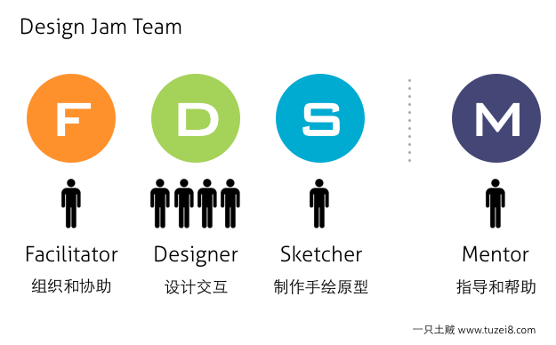
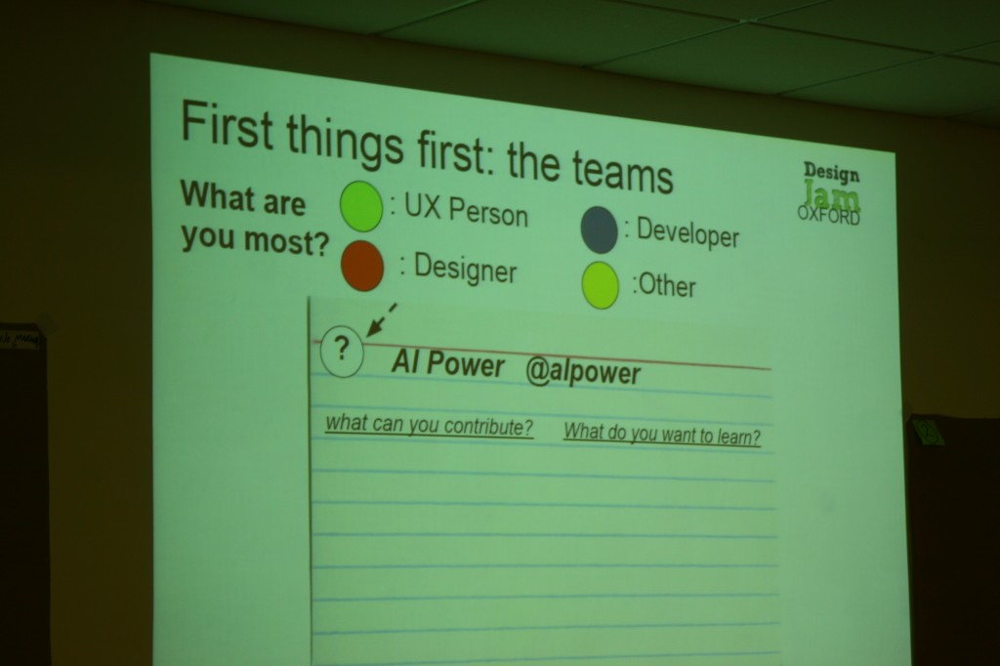
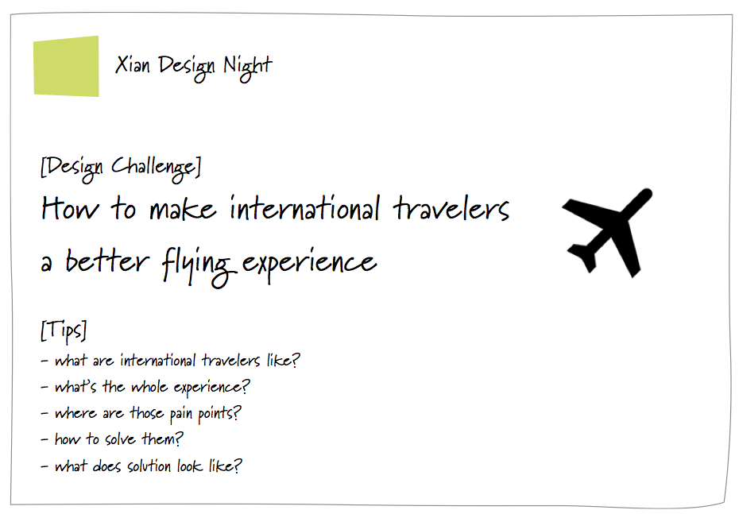
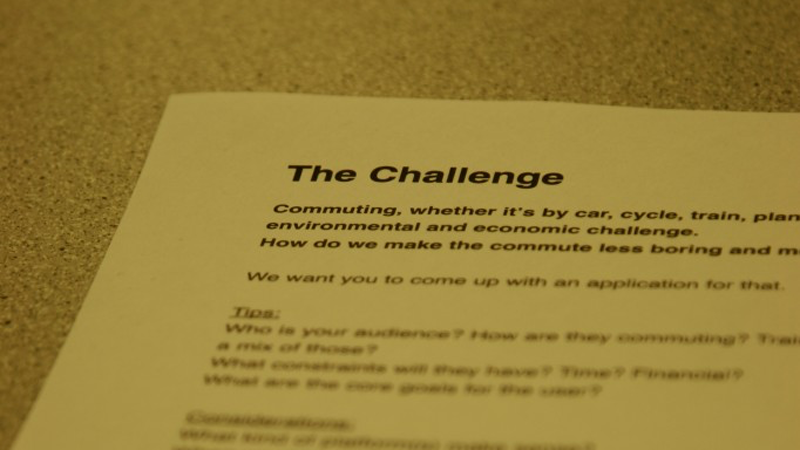
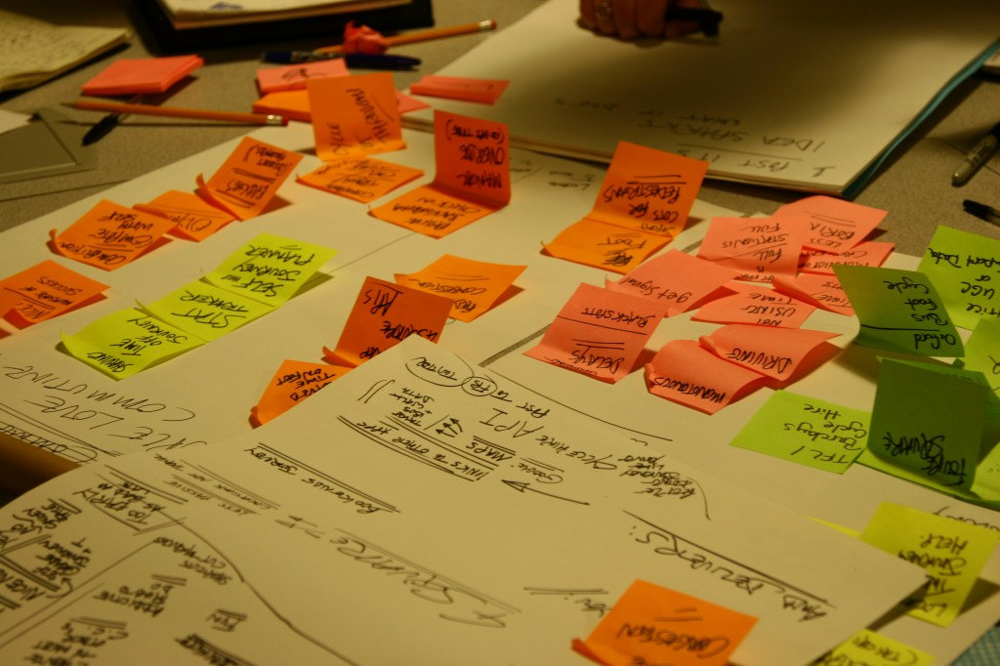
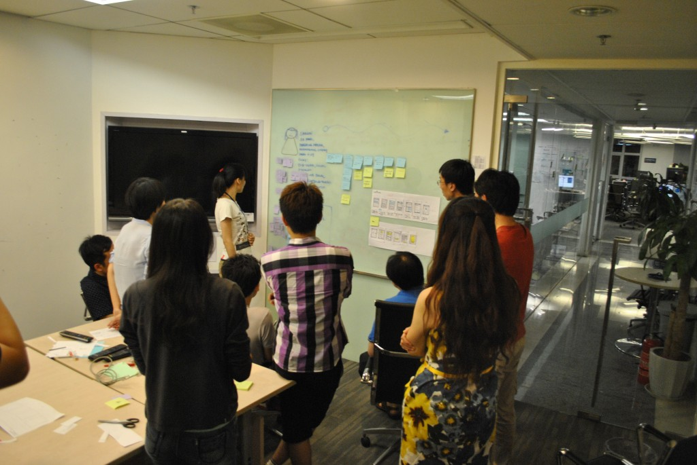
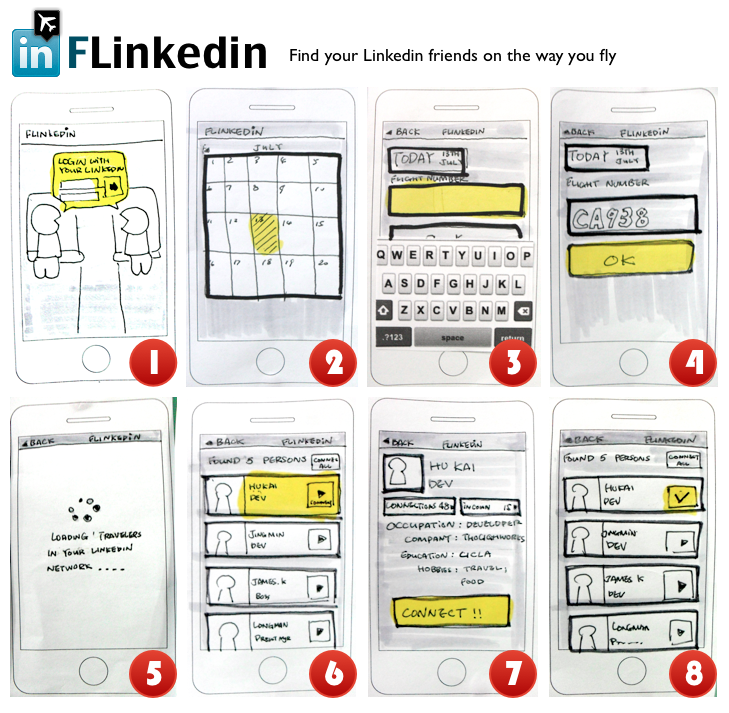

在ThoughtWorks我们把它叫作Design Night，不论是西安还是北京，Design Jam都已经成为我们的传统项目。
Design Jam的本意是让更多的人知道我们在客户里做了什么，当逐渐更多人掌握了创新的方法时，这个活动就开始成为我们这个组织的创意实验室 （Innovation Lab），每次Design Jam的结果都可能成为各个开发小组的素材，把他们变成真正的产品。这就是微创新的魅力。
谁来参加Design Jam
参加Design Jam的可能有多种角色：第一是擅长组织的Facilitator，这种人往往是一个设计小组的引导者，在我们这里往往是业务分析师扮演；
第二是擅长交互设计的Designer，这个角色可能有多个人，也是设计小组的主体，当然我们不可能有那么多的UX，参加Design Jam大多是没有设计经验的开发人员，但也不要紧，其实有时你会发现人人都是设计者，只是大部分人不会表达；
第三种角色是擅长手绘的Sketcher，一般有一个人就足够了，不要以为手绘有多难，很多女孩都有这个潜在能力，只要稍加指导她们就能画出很帮的原型；
这样一个拥有F.D.S三种角色的小组就产生了，为了考虑结对，1:4:1的比例比较合适。

每个小组还需要配备一名有足够经验的Mentor，协助设计小组推进设计的进行，只提供必要帮助和讲解而非左右设计方向。
早些日子我在牛津参加的Design Jam采用的是不同风格。

组队方式
可以采取自由组队的方式进行PK，一个两小时的活动可以考虑两组12人加一到两个Mentor，如果全天活动可以考虑更多。
可以用不同颜色的标签代表不同角色，让大家自由组队，保证有一个F和一个S。
提前告知设计挑战（Design Challenge）
为了让参与者有更好的准备，可以提前告知设计挑战，你可根据参与者的能力决定是否要公布。
下面显示的是一次西安Design Night的设计挑战：

下面显示的是牛津Design Jam的设计挑战，其中还包含了一些Tips：

设计挑战的内容一定不要出现解决方案，与其说：如何设计一款好的机票预定软件；不如说：如何提升国际商务飞行人士的飞行体验。后者让创意更有广阔发展空间。
这些设计挑战你可以作为参考：如何让准妈妈在怀孕期间得到更好的照顾；如何让海外旅行的爸爸妈妈玩得更好更安全；如何让通勤者更愉快；如何让公益事业参与者获得更多的资助机会等等。
活动前的准备
- 白纸：让大家有足够多的草稿纸写写画画；
- 白板：每个设计小组应该有一块白板，所有成果都应该在这块白板上，并围绕白板作为展示，请保证白板笔和板擦；
- Post-it贴纸：Post-it是最好用的观点收集达成一致的工具；看下面我们用得有多频繁？
- 笔：每个设计小组，描边针管笔两支，Sharpie记号笔两支，签字笔人手一支，阴影笔两支，高亮记号笔一支，铅笔若干；

下面是各种笔的链接，可以考虑购买：
- 描边笔：http://item.taobao.com/item.htm?id=279587870
- Sharpie: http://item.taobao.com/item.htm?id=3390025364
- 阴影笔：http://item.tmall.com/item.htm?id=6053257727 (这一款味道实在太大了) 也可以考虑 http://item.taobao.com/item.htm?id=10418395567 色号尽量选择最低灰度的灰
- 高亮笔：同样也是上面这两款笔，只是选择亮色系的色号。
设计过程
从时间来说，在牛津参加Design Jam时时间是一整天，但是它有10个组参加，我们Design Night的时间一般是两到两个半小时。
此外，Design Jam的过程并没有明确的规定，大家可以按照自己想法进行创意，我们一般会推荐ThoughtWorks Collaborative Design的方法进行。Collaborative Design的方法可以在这里找到，其核心的流程是：
- 寻找Persona
- 绘制Customer Journey Map
- 寻找How-Might-We（HMW）
- 对HMW进行手绘设计
- 精化设计
- 展示
展示
每个组都应该最自己的设计做最后的总结，告诉大家设计的过程，已经最后的产出物──设计草图。重点在于对过程的体会和描述，结果往往不是那么重要。下面的图展示了我们如何进行演示，以及最后的产出物，一块内容丰富的设计图版以及一套足够开始进行开发的设计草图


写在最后
在ThoughtWorks我们会把Design Night当成Innovation Lab的一部分，每次都有自发组织的程序员开始尝试把它们变成真正的产品。此外，如果你是一个创业团队，或者你们的组织也在做类似的创意活动，我非常高兴能够参与其中，交换我们不同的创意方式；同时我们也在考虑把这样的活动推广到公司外部，如果你有兴趣，请和我联系，我的邮箱是zcxiong[at]thoughtworks.com。